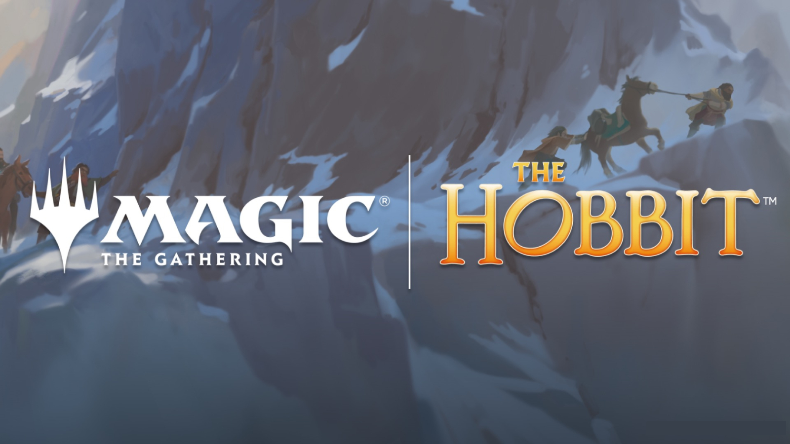
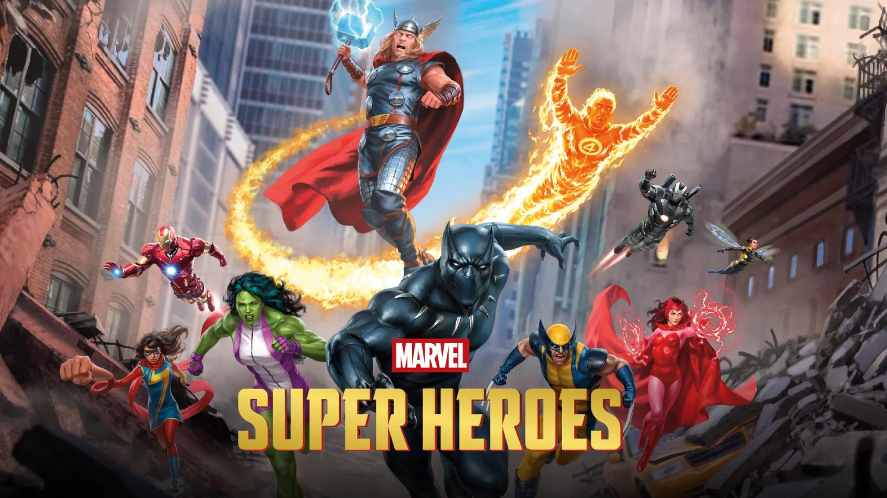
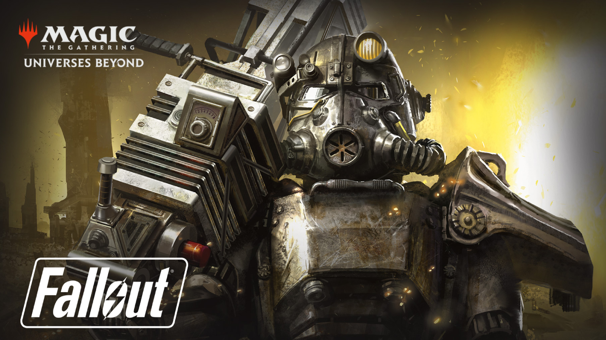
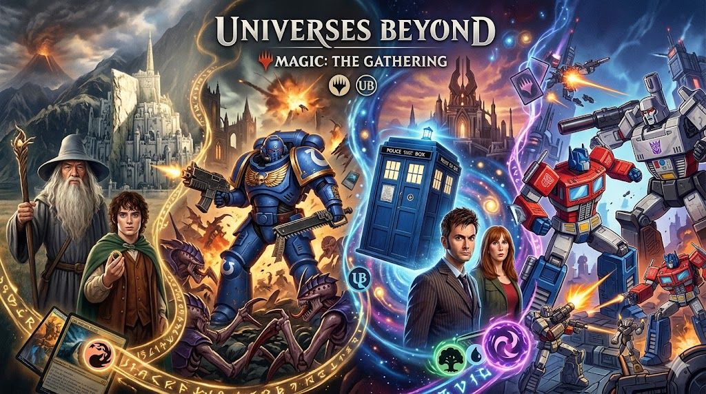
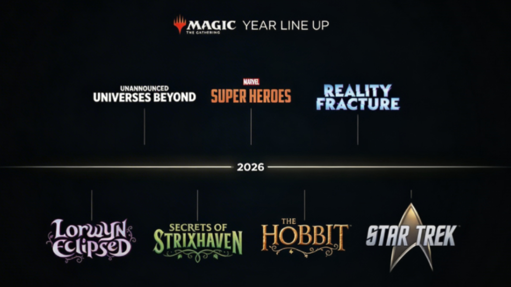
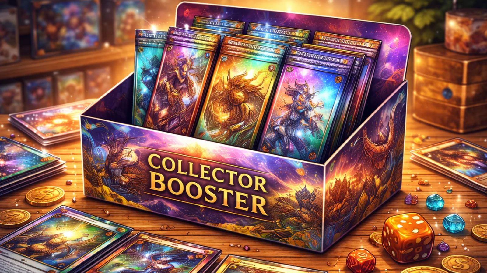
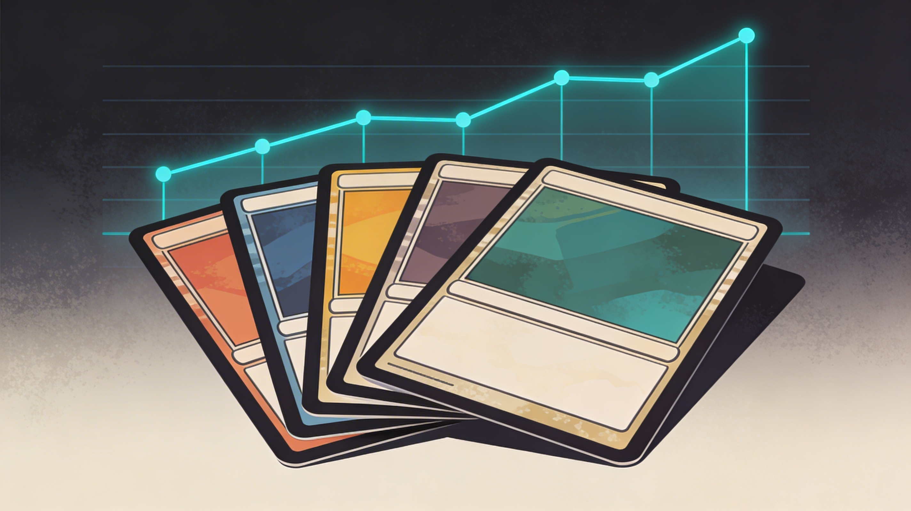

 The Hobbit × Magic: první pohled na karty, mechaniky a co to znamená pro sběratele Bilbo, Gandalf, Smaug i Osamělá hora mají své vlastní karty. Jak fungují nové mechaniky a které karty sledovat? Číst více
 Magic × Marvel: první pohled na karty, mechaniky a co to znamená pro sběratele Captain America, Hulk, Galactus i Namor mají své vlastní karty. Které sledovat jako sběratel? Číst více
 Secret Lair × Fallout Rad Superdrop: Lucy, Ghúl a Mothman přicházejí do Magicu Magic se vrací do světa Falloutu – Rad Superdrop přinesl Lucy, Maximuse, Ghúla i Mothman jako nové karty. Číst více
 Je Universes Beyond dobrý nebo špatný pro Magic? Universes Beyond dnes tvoří většinu Magic produktů. Je to záchrana hry, nebo ztráta identity? Číst více
 Rok 2026 v Magicu: kompletní přehled setů, co letos nesmíš přehlédnout Přehled všech setů Magic: The Gathering v roce 2026 – od Aetherdrift až po Hobbit. Číst více
 Jak poznat MTG kartu s investičním potenciálem: 5 pravidel, která fungují Ne každá drahá karta je dobrá investice. 5 pravidel zkušených sběratelů. Číst více
 Top 5 MTG karet s největším růstem ceny na začátku roku 2026 Které karty nejvíce rostly na ceně začátkem roku 2026 a proč? Číst více
Strixhaven: skryté sběratelské poklady, které si málokdo všiml Strixhaven obsahuje několik karet, které sběratelé přehlédli – a teď pomalu rostou na ceně. Číst více
Jak začít s Magicem: vyber si první produkt Co dává největší smysl na start? Rozdíl mezi starter setem, předpřipraveným balíčkem a boostery. Číst více
Jak začít s Magicem: základní pravidla hry Jak probíhá kolo, co je to země, kouzlo a bojová fáze. Jednoduchý přehled pro první hry. Číst více
Jak začít s Magicem: první formát a komunita Kde si zahrát, jaký formát zvolit a jak se přidat k lokální komunitě nebo MTG Arena. Číst více
Jak poznat silné a slabé karty v Magic: The Gathering Naučíš se rozeznat, které karty stojí za pozornost a které jsou zbytečné – bez zbytečné teorie. Číst více